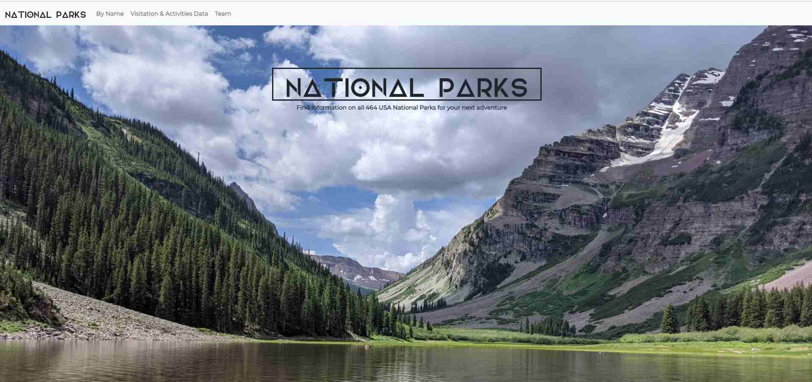
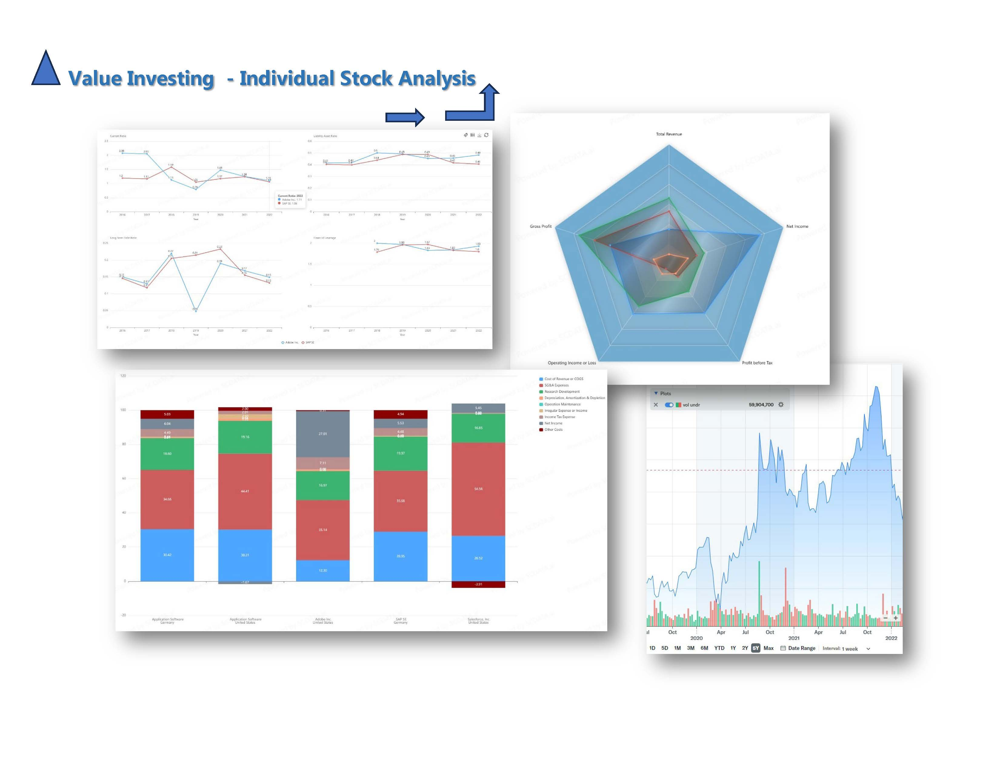

─── Projects ───
The purpose of this project was to analyze how the weather changes as we approach the equator. To answer this
question I used a dataset of more than 500 cities across the world randomly selected using Pyhton library
citipy and the OpenWeatherMap API.
Type of project: individual
Technologies: HTML / CSS, Python
Type of project: individual
Technologies: HTML / CSS, Python
In the following exhibit I used the Belly Button Biodiversity dataset to build an interactive dashboard to
explore and document a variety of microbes that colonize human navels.
The dataset reveals that a small handful of microbial species (also called operational taxonomic units, or
OTUs, in the study) were present in more than 70% of people, while the rest were relatively rare.
Type of project: individual
Technologies: JavaScript, HTML / CSS
Type of project: individual
Technologies: JavaScript, HTML / CSS

National Parks
Our aim was to provide useful information for prospective travelers to National Parks. You can find
information on all 464 National Public Service Parks in US, including 63 with 'National Park' designation, as
displayed on the map with a link to an individual page for each park. We also wanted to include top parks
visited and top activities to do in the parks.
Type of project: group
Technologies: Python (Flask, Pandas, PyMongo); HTML / CSS (Bootstrap); Javascript (D3, Plotly, JSON, Leaflet JS, Extramarker); MongoDB
Type of project: group
Technologies: Python (Flask, Pandas, PyMongo); HTML / CSS (Bootstrap); Javascript (D3, Plotly, JSON, Leaflet JS, Extramarker); MongoDB
Machine learning models presented here were developed as a part of the group project. Only machine learning model site where I participated in development
is functional over here.
We created a model that would predict the quality of white and red wine creation using
supervised machine learning. In our models we analyzed the effects of selected features based on
physicochemical (input) variables by using Random Forest Classifier. We built a model for red wine, followed with
white wine model to predict the quality score of the wine (output variable). Also we wanted to tackle the
data about world wines from Kaggle and tried to build a model which could give the quality output based on the
price of the wine, country of origin, and the variety of the wine. Those are information the consumers are
usually considering before they choose a wine to buy. The models were built for the interactive website, where the user can easily navigate and enter the data.
So, what will be the quality of the wine, can we predict the good quality of the wine based on our model?
Type of project: group
Original Technologies: Python (Flask, Pandas), JavaScript, Machine Learning (Seaborn, Sklearn, Numpy, Matplotlib, Joblib), HTML / CSS (Bootstrap)
Type of project: group
Original Technologies: Python (Flask, Pandas), JavaScript, Machine Learning (Seaborn, Sklearn, Numpy, Matplotlib, Joblib), HTML / CSS (Bootstrap)

Stock Analysis
The project was built using value investing principles by leveraging data science.
Value investing is a successful long-term investment strategy that involves selecting stocks that appear to be trading for less than their intrinsic or book value. Data science models can help predict the next stock price move and help investors capitalize on market inefficiencies by purchasing undervalued stocks, holding them until their market price aligns with their true value, and then selling them for a profit.
Our focus was on the Application Software industry (level 4 in the Global Industry Classification Standard, GICS). We developed data science models and visualization tools to determine the fair price (intrinsic value) of individual stocks. These tools were then used to conduct over-value (or under-value) analysis on case studies of individual companies – Salesforce, Inc., Adobe, Inc., and Synopsys, Inc.- providing results and information based on fundamental analysis, comparative valuation, and competitive intelligence.
Type of project: individual
Technologies: public resources scdata.ai
Value investing is a successful long-term investment strategy that involves selecting stocks that appear to be trading for less than their intrinsic or book value. Data science models can help predict the next stock price move and help investors capitalize on market inefficiencies by purchasing undervalued stocks, holding them until their market price aligns with their true value, and then selling them for a profit.
Our focus was on the Application Software industry (level 4 in the Global Industry Classification Standard, GICS). We developed data science models and visualization tools to determine the fair price (intrinsic value) of individual stocks. These tools were then used to conduct over-value (or under-value) analysis on case studies of individual companies – Salesforce, Inc., Adobe, Inc., and Synopsys, Inc.- providing results and information based on fundamental analysis, comparative valuation, and competitive intelligence.
Type of project: individual
Technologies: public resources scdata.ai